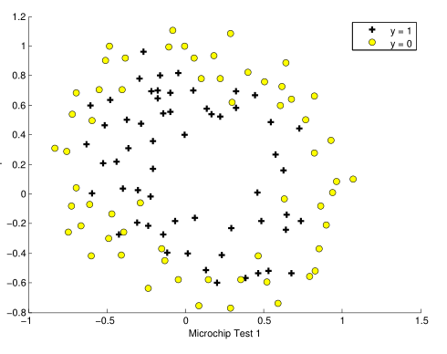
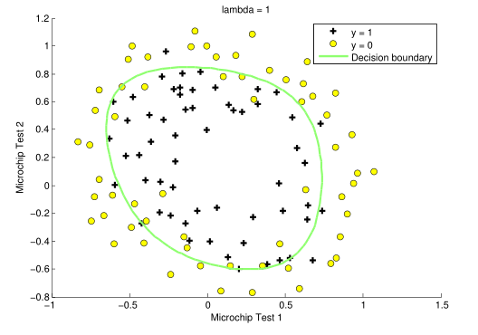
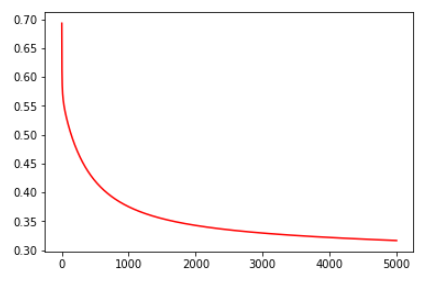

Implementing Polynomial Regression In Python/Numpy From Scratch

Can we use a linear decision boundary to classify this data? Clearly, we can't. So to make this happen we'll use feature mapping in order to produce polynomial features which may probably produce a decision boundary with which we'll be able to classify our data. Like this maybe.

Okay, Let's give it a shot. We'll try to classify this data using a linear decision boundary and see how things go. Following will be our code for implementing a linear decision boundary on this dataset.
With this code we'll be obtain 'cost vs iterations' graph which will show us that exactly how good is our decision boundary.
This graph clearly shows us how bad our decision boundary is. Cost of the model has barely reduced.
Now let's try to implement polynomial regression and see if there's any improvement.
This code is in continuation with the above block of code. In this part of code we have generated polynomial features and used them to create a decision boundary. Let's see if this decision boundary is able to reduce cost of our model or not.

This is way way better than the linear decision boundary. Cost of our model has reduced drastically.
Important takeaway from this post is generation of polynomial features. We can generate polynomial features like we did above using a self made implementation. But this is not generalized. It can only generate polynomial features for a model which has only two features initially. We'll have to implement another function if we want it to work on different datasets with different number of features.
Hence, we'll use implementation of polynomial features from a library called scikit-learn.
The above code snippet shows us how can we implement feature generation through scikit-learn.